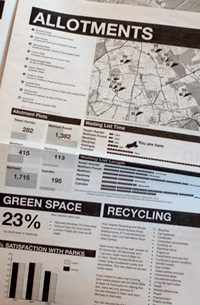

Recently Apple released their new “revolutionary” device called the iPad. With all the talk of tablets and eBooks, some might consider this the beginning of the end for printed material. I would argue just the opposite, with print no longer being the primary source of information, the tools to print can be harnessed by more and more people. Companies have invested years of knowledge and money into these machines. To make them pay-off, they need to be opened-up to more customers than before.
A few months ago, I wrote about the PaperNet and in the mean time, several interesting things have happened. The core idea of the paperNet is that it is the Internet available on paper rather than just a screen. Now this might seem strange, but paper offers many advantages over a computers. The tricky thing that holds back the paperNet is both data and scale. It is relatively easy for someone to print out a sheet of paper at home, but it is more difficult to populate that paper with interesting statistics and worthwhile information. Home printers don’t scale. Sure, if you want to print a few copies for yourself and friends you can use a cheap inkjet to do that, but on an industrial scale it has always been much harder to print quality sheets in the hundreds or thousands.
Enter Newspaper Club. Recently in the UK, they have struck deals with local printers and printing presses to get very short-run high quality newspapers printed at very affordable prices. All of a sudden, the world of industrial printing that was never available to most people has been opened-wide!
Couple that with the US and UK governments creating data.gov and data.gov.uk respectively and you have a huge source of information to pull from and populate your paperNet.
This is exactly what the Newspaper club did as a proof-of-concept prototype. They dynamically created a paper with a dozen or so pages based on UK post-code data. So if you lived in post-code EH9 2JT you could get a set of newspapers printed exclusively about your area, including the crime rate, a list of schools, who is your representative in government, shops, bus stops and times, etc. This is a boon to local news and hyperlocal content.
As I was discussing this with friends, we all came-up with great ideas and uses for a print-on-demand newspaper. Some friends are trying to buy and sell their apartments and they remarked about how poorly estate agents “get it”. When searching for a home, they were give a crappily printed A4 paper with information about the house, the address and the sales person’s contact info. Some didn’t even go that far, they just had business cards with tacky sayings on them like call my “sell phone”. Needless to say, we thought about how memorable it would be if you went to look at a house and the home-owner didn’t give you a simple A4 sheet with an address (yeah, thanks we managed to find the house already, so you giving us the address isn’t much help) instead they gave you a 12 page newspaper about the area. How well the school system is compared to other areas, where is the nearest shop to get some milk on a Sunday morning, a list of restaurants nearby, information about the parking discs and council tax, etc. If a home owner gave me a newspaper about the area (and the stats looked good), I’d be sold! Obviously, buying a house is a big decision, but it’s certainly not predicated on an A4 sheet of paper with a blurry LazerJet printout photo of the house. It’s all about the neighbourhood. You can make adjustments to the house to make it your own, but the bigger picture is less under your control.
After complaining about estate agents, which isn’t really fair since they are such easy targets, we soon realized that so many other people just don’t get it either! A few years ago, I went through several months of brainstorming sessions to design a major airlines’ printable boarding pass. My friends and I soon realized how many aspects of our daily lives could be better improved with small touches from the paperNet.
From an airlines ticket to train tickets, what is the most important information?
This is tricky because a train ticket could be bought well in advance, so much of the potential information printed on it is still unknown. The departure time, the length of the journey, number of stops, or even day of departure if it is an open-ended ticket. Then why is the largest font on a train the ticket the price? This is the least useful part of the ticket after you purchased it. For the few of us who are allowed to recoup our travel costs, it is useful and necessary, but does it really need to be the focus of the ticket? If you could re-design a train ticket with the help of the paperNet what would it look like?
When buying a train ticket, you only know two things, your starting location and your destination. Take for instance a train route from Brighton to any London station. These trains might be slow trains, stopping at every destination or fast trains with fewer stops. What if the train ticket itself could list out, like the tube map, all the possible stops and somehow code them as express stops, fast stops or every stop that a slow train would make. It could also label stops that you can switch to other train lines, airports, etc. For the infrequent traveller this would be helpful to get a bearing of how far they have gone and how for it is to go. Another simple thing that the ticket stub could print is expected maintenance, delays and what days trains will be running on off times. An estimate of how often the train runs, is it hourly, every 10 minutes or some other interval, possibly delineating fast trains. Sometimes it is worthwhile waiting 15 minutes to catch a train that gets you to your destination faster. The first and last trains to and from the destinations could be useful for those who have to wake-up early to catch a flight or want to stay in town late, but not miss the last train back. This mock-up also tries to pull in the current weather for the destination. In some cases this is useful, in others it is probably outdated. In this return ticket scenario, having the London weather on your return ticket printed at 8:30 in the morning, isn’t going to be correct when you come back later that day.
With airlines boarding passes, there is so many ways they could improve them, but they don’t. Either no one has told them about the possibilities, they just don’t get it or see themselves in that market. An airline company might think of themselves as a bus, they simply take you from point A to point B. Some companies are trying to be all things travel and offering package deals, hotel stops, flights and food packages. Most are somewhere in between, but never the less, I’ve never seen a boarding pass that I liked, and I’ve even designed one! After plenty of red-tape, head scratching and a push by the competitor, my boarding pass never achieved its potential greatness.
Much like the selling of a house, a car rental company could simply ask you roughly where you plan on travelling. Here in Iceland there are only a few different directions you can go, and even then it is only a few days travel possible. What if there was a way to create a newspaper type printout for common tourist routes, with dynamic stats, information, photos, weather all on a nice, recyclable, battery free delivery mechanism made of paper. As a tourist I could go with company A or company B, but company B gives me a free custom travel guide and newspaper to browse. All other things being equal, it’s a no brainer.
The more and more you look around at the paper objects you collect on a daily basis, the more and more they can all benefit from some dynamic information. We are now on the verge of being able to merge real-time statistics with historical data. What if your grocery store receipt not only told you how much you just spent, but how much you spent this calendar month or this year? If you use a credit card the store’s backend system knows exactly how much you spent, why not present this to the user and/or merge it in with some sort of online service that tells you what the average person spends on a grocery bill, possibly highlight items or better deals on the items you purchased, letting you know how much you could have saved. Having rich data sources are important, but these don’t always need to be public. Personal information such as messages in your email inbox, from social networks and other such data are excellent source to help drive the paperNet.
With open printing presses and organizations such as the Newspaper Club, we can begin to step away from the personal paperNet to a light-weight consumer version printed on A4 paper to something much larger. Now, we have the ability to create one-off professional print-runs for many more people than was possible before.
Hyperlocal news and information are a growing trend these last few years, from sites like outside.in and chicago crime, which morphed into everyblock which was eventually purchased by MSNBC, to travel sites like Dopplr which offered places to eat, stay and see based on peer reviews was gobbled-up by Nokia. If hyperlocal information is what companies want, then there needs to be a traditional and easy mechanism for them to distill it and give it back to us. For the longest time, the only way was via the Internet. We created news and content via email, websites and SMS and then turned around and consumed it in the same ways. The paperNet allows us to begin to break-out of the cycle and add information via digital mechanisms, but present that information in an analog form.
From selling or buying a house, to what’s happening in town this weekend, to a newspaper created by students about some niche topic, to neighbourhood news, to beautiful photos, to a weekly recipe newspaper, anything becomes possible. It’s now easier than ever to share your knowledge with the world in a format that people enjoy.
A computer screen feels like work. You stare into a screen for 8 hours a day, constantly checking email, typing in a word processor or running numbers in a spreadsheet. The last think you feel like doing is going home, curling-up on the weekend with a nice cup of tea and read a 3,000 word article at 72dpi with a laptop so hot you could fry and egg on it. Paper is the perfect replacement. A broadsheet newspaper that has been gorgeously laid-out not only feels professional and relaxing—it doesn’t feel like work. It will be there waiting for you later after you put it down with an everlasting battery life. It doesn’t demand your attention like a beeping and bouncing icon, yet at the same time, all the information you can find in the paper came from online. The message is still the same, but the medium has changed—sometimes for the better!
As the price of printing a black and white newspaper is dropping down so low it is an incidental cost when trying to sell a house or rent a car. We should begin to see more and more of these short-run, professionally designed newspaper paperNets proliferate.
Print on demand is gaining in popularity with the ease of access to professional services and ever decreasing prices and we haven’t even touched on printing of physical plastic 3D objects yet.
Its kind of outside the Newspaper Club model [or any 'print-professionally-on-demand' model], but I’ve recently started going Instapaper’s print formatting a go. I was finding things filed with Instapaper when hitting the “Read Later” bookmarklet went into a black hole for weeks until I was caught waiting for a train or something. So far I’ve found it quite useful when I’m looking to take a break from the screen, making little stacks of 10 or 12 page weekly ‘zines’ for myself.
I hadn’t thought about it in the past, and surely there’d be issues like copyright, but Ii wonder how useful being able to pool these “worth reading” or “favorited articles” of a small peer group into a format meant for offline reading.
There has been atleast 1 instance of people collecting so many Instapaper bookmarks that they just collected all the content, sent it to Lulu and had a proper book printed.
http://blog.thoughtwax.com/2009/03/instapaper-analogue-edition